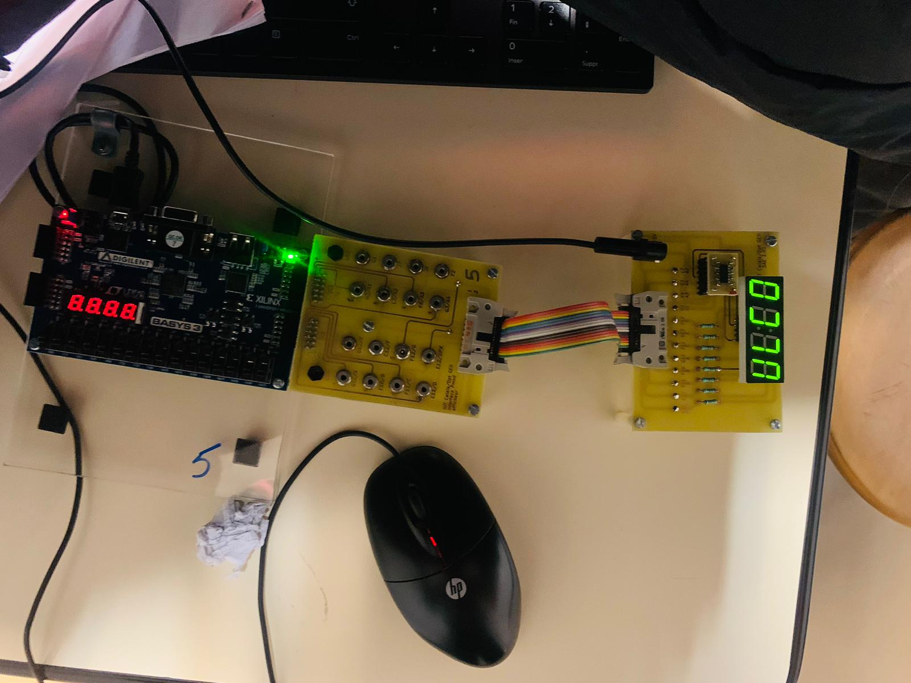

Abdou Mbaye
Future force de l’industrie 4.0, je suis un étudiant en Génie Électrique et Informatique Industrielle animé par l’innovation, les systèmes connectés et les défis technologiques de demain.
Future force de l’industrie 4.0, je suis un étudiant en Génie Électrique et Informatique Industrielle animé par l’innovation, les systèmes connectés et les défis technologiques de demain.
Je m’appelle Abdou Mbaye, étudiant en Génie Électrique et Informatique Industrielle (GEII). Originaire du Sénégal, je poursuis actuellement mes études en France avec la volonté de contribuer à des projets technologiques concrets et utiles.
Mon parcours m’a permis d’acquérir des compétences solides en électronique, automatisme, et informatique industrielle, tout en développant un réel intérêt pour les systèmes intelligents et les environnements techniques complexes.
Je suis quelqu’un de curieux, rigoureux et toujours en quête de nouveaux défis. J’aime comprendre comment les systèmes fonctionnent, anticiper leurs besoins et participer activement à leur amélioration.
À travers ce site, je partage mon parcours, mes projets et mon objectif professionnel : m’investir pleinement dans l’innovation technologique et l’industrie de demain.
Conception d’un système intelligent contrôlant un volet selon la luminosité. Utilisation de capteurs et automate programmable.
Réalisation d'un rototype d’affichage de texte sur plusieurs afficheurs 7 segments commandés par microcontrôleur.
Etudier la précision d'un capteur d'accélération (accéléromètre), acquisition et traitement de données. Présentation de résultats graphiques.

Consultez mon CV détaillé pour plus d'informations :
Télécharger le CV (PDF)Actuellement : Je suis en recherche active d’une alternance en GEII pour la rentrée 2025. Motivé, adaptable et curieux, je souhaite mettre à profit mes compétences dans une entreprise qui valorise la technologie et l’humain.
Email : mbayeabdou206@gmail.com
Téléphone : +33 780 87 60 76